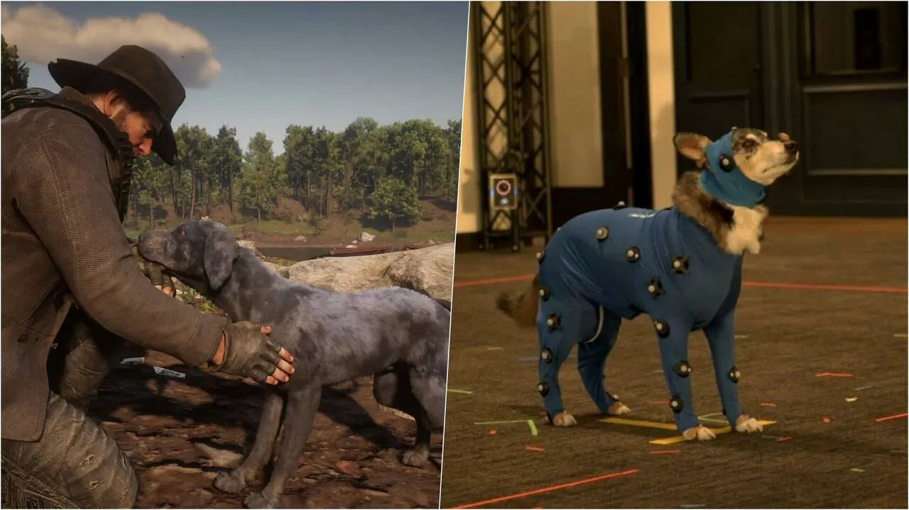

El perro actor de Cain de Red Dead Redemption 2 fallece a los 13 años
Jason Barnes, animador en el juego de Rockstar Games, rinde tributo a su mascota en una emotiva publicación en Instagram de la que se ha hecho eco inXile, donde Barnes es director de animación.

Valorant goza actualmente de buena salud,: está desde finales del año pasado en PC Game Pass y Riot Games le está dando la vida suficiente como para que tenga una buena base de jugadores. Según datos de finales de 2022, cada día lo juega una media de dos millones de jugadores. En el aspecto competitivo va aumentando el número de espectadores en las competiciones. Riot está poniendo las medidas para que no haya tramposos en la comunidad y para que sea un lugar en el que se sientan incluidos todo los jugadores.
En España, el equipo de casters de la Liga de Videojuegos Profesional (LVP) no para. Emma Pache (nombre por el que es conocida Vilma Arrufet) es uno de sus integrantes. Su naturalidad y soltura ante la cámara así como su capacidad de expresarse la han convertido en un elemento indispensable del equipo de casters de Valorant.
Emma jugaba de pequeña, muchas veces se trataba de una experiencia individual porque sus amigas no jugaban pero en otras ocasiones lo hacía con sus padres "porque soy hija única, nieta única y bisnieta única, no tengo ni primos, me parece importante que mis padres estuvieran ahí para que tuviera a alguien con quien jugar, jugaba con mi padre a Formula 1 y a SSX con mi madre", señala. Siendo más mayor llegaron más experiencias compartidas con los videojuegos gracias a sus parejas; su primer amor la animó a instalarse WoW y, ya en la universidad, fue un novio con quien comenzó a jugar a League of Legends. "Siempre he sido bastante competitiva pero me gustaban los videojuegos en general, me parecía un medio superinteresante también a la hora de comunicar, qué mensajes quieres expresar y cómo los trasladas para que afecten de una manera más personal al jugador o jugadora. Era otro lenguaje, básicamente", explica.